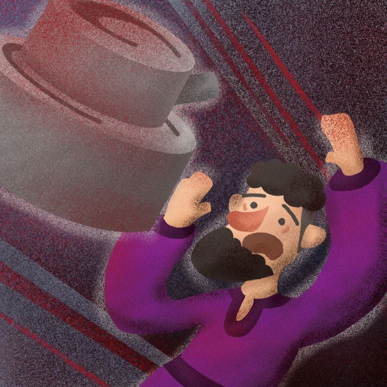

第6章

走出一片灌木叢，艾迪爾抬頭看向下一個目標，眼睛瞬間明亮起來，從房屋的建築材料到屋外的裝修設計，無不在宣示著屋內主人的家境比前幾戶高出好幾層。
敲開門後，艾迪爾有點意外的看向此時不應該出現在家裡的男主人。 男子開門後看到門外站著的是財主家的小兒子，臉色瞬間沉下去：「你來幹什麼的？」
艾迪爾朝屋內望了望：「嗐，大熱天的，你就不請我進去坐坐？」
男子猶豫一會，思及對方的身分，不情願的將門開大一點，讓艾迪爾走進屋內。
艾迪爾眼珠子亂轉，不斷的觀看屋內的擺設：「昨天吉迪恩被殺了，我懷疑……」 一句話還沒說完，就被男子打斷：「昨天我去城裡做買賣，沒注意天色，最後是在城裡過夜。平日裡跟吉迪恩也沒有什麼恩怨，他不是我殺的。」
艾迪爾打算故技重施：「我憑什麼相信你說的話？」
男子蹙眉看向艾迪爾，一語道破對方的目的：「人不是我殺的，我也沒在你們家手底下工作，你就別想從我這拿賠償了。」
艾迪爾臉上一紅，惱羞成怒的走到櫃子旁，拿起自己一進門就看上眼的花瓶：「我看他就像是殺死吉迪恩的凶器，我得帶回去研究研究。」
男子看著眼前勸說不成就打算明搶的艾迪爾：「我若是拿花瓶砸人，它不也得碎掉嗎！」
艾迪爾像是抓到破綻，一臉興奮：「哇！你是怎麼知道的？是不是真的拿花瓶砸過人？看來我得再仔細檢查檢查你家了！」
男子極力的克制心中燃起的怒火，指著門口：「走，你走！愛檢查花瓶你就回家慢慢檢查！」
被趕出門的艾迪爾，還不忘對著已經緊閉著的房門喊道：「如果最後我發現這不是凶器，一定回將他還給你！」
終於討到一件好東西，艾迪爾的心情也瞬間輕快起來。眼中閃過一絲得意，艾迪爾將懷中抱著的花瓶交到身後跟著的僕人手裡，並囑咐對方先將它帶回自己房間裡收好。
剛跟僕人分開的艾迪爾，被聞訊趕回來的以塔納叫住：「艾迪爾小少爺！聽說您在尋找殺害吉迪恩的兇手，我知道這事的經過。」
艾迪爾聞言驚喜的轉頭，沒想到自己辛苦一整天，真的能找到有用的線索：「是嗎！快說來聽聽！」
接著，以塔納就將自己昨天的所見所聞，從下午以利雅薩、葉迪爾跟吉迪恩發生的爭執，到晚上看到艾維殺了吉迪恩，一字不漏的說了一遍。
得知事情真相的艾迪爾，不禁開始思索去和葉迪爾與以利雅薩索要賠償的事。
似是看出艾迪爾的心思，以塔納將對方往以利雅薩家引去：「葉迪爾今天早上就找不到人，說不定是逃跑了，你要找以利雅薩人的話可能得快一點。」
艾迪爾點點頭，跟著以塔納快步往以利雅薩家走去。以塔納看著已經從身旁經過的自家大門，悄悄的鬆了一口氣。
另一邊，思緒早已飄到九霄雲外的以利雅薩，匆匆的完成自己的工作後，就往葉迪爾家跑去。他急於知道事情的真相是否真如以塔納所說的。
在敲響葉迪爾家大門前，以利雅薩還在心中不斷的說服自己，葉迪爾可能只是昨天晚上回家後著涼了，因為不舒服所以早上才沒到田裡工作。
然而事情總是不如自己的預期，面對空無一人的房屋，以利雅薩感覺內心就像這間屋子一樣，淒涼、灰暗。
過了好一陣子，以利雅薩才回過神來，失魂落魄的往自己家走去。
還沒走進家門，以利雅薩就聽到屋內傳出一片吵雜聲。一個恐怖的想法從心中冒出來，恐懼順著想法蔓延進內心深處。
以利雅薩衝進家門，就見自己的母親被以塔納按在牆邊，而艾迪爾在一旁翻箱倒櫃。
以利雅薩朝著兩人咆哮：「你們在幹嘛！出去！這裡不歡迎你們！」
被以利雅薩拉出門外的艾迪爾，隨手扯下掛在門框上的經文盒，扔在地上踩了踩，指著以利雅薩：「呵，今天真讓我長見識了，原來信靠耶和華的，都是會做這種事的人！」
以利雅薩拍開指著自己的手指，回身就想將以塔納也拉出門外：「艾維殺人的事，我根本就不知道！」
艾迪爾用眼神示意以塔納稍安勿躁：「哦？那你怎麼知道艾維殺人的？從頭到尾，我好像都還沒跟你提過這件事啊！」
不等以利雅薩開口說出辯駁的話，艾迪爾又再度開口：「都說殺人抵命，既然你說你沒殺人，我也不要求你償命，但拿點賠償總沒問題吧！不多，就一百舍客勒銀子，如何？」
「不怎麼樣！」以利雅薩感到全身的血液都在血管裡沸騰，腦袋像是被巨石壓住般，快要炸裂。
艾迪爾若有所思的點點頭：「啊，也是，看你們家這麼窮，估計連十舍客勒銀子也拿不出來。我也不為難你們，就拿一些值錢的東西當作抵押好了。」
眼看艾迪爾說著就往牆邊的磨石走去，以利雅薩腦中響起從小以來，母親一直教導自己的話：「不可拿人的磨或上磨石作抵押，因為這是拿人的性命作抵押」[1]。這時，他腦中最後一根名為理智的弦終於繃斷了。
就在艾迪爾彎腰抱起磨石時，以利雅薩衝到艾迪爾身邊，也跟著抱住磨石，跟艾迪爾爭奪起來：「放下！」
說時遲，那時快，艾迪爾一個沒站穩，就往後倒在身後的磨上，昏了過去。汨汨鮮血順著磨流到地上，滲入土壤深處。
以利雅薩被這突如其來的變故嚇的往後倒退幾步，口中不斷喃喃的低語：「不是、我不是故意的。」
接連兩天都見到如此令人難以接受的畫面，以塔納頭也不回地逃離現場。只留下一句話，猶如尖銳的刀鋒，直直刺進以利雅薩的心臟：「以利雅薩又把艾迪爾給殺了！」
這一瞬間，以利雅薩彷彿看見眼前的世界碎成千千萬萬片。看著凌亂的家中，他蹲下身子，將頭深深的埋進膝蓋裡。他不懂為什麼最終的結局會演變成這樣，明明在昨天以前，世界都還在正常的運行著。
是不是如果昨天自己沒有制止葉迪爾，他就不會受到委屈，艾維也不會為了他而去殺人。是不是如果今天早上他就發現葉迪爾家沒人了，就可以先帶著母親暫時離開這裡。是不是如果……
突然，一雙溫暖的大手環抱住以利雅薩，將他不斷往下墜的思緒從深淵裡拉回來。只聽見吉安娜溫柔的聲音在耳邊響起：「去庇護城吧！希伯崙離這裡只有一天的路程。上帝會紀念我們之前的擺上，保守看顧我們的。」
以利雅薩抬起頭呆呆的望向自己的母親，雙目中映出無限的空洞。好像被掏空靈魂一樣，他下意識地張了張嘴，卻沒有發出任何聲音。
[1] 申命記二十四章6節。